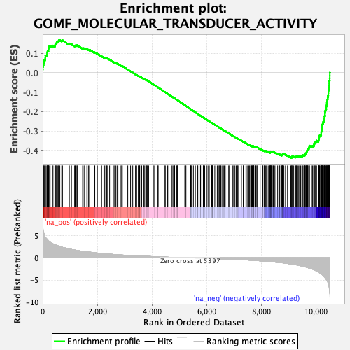
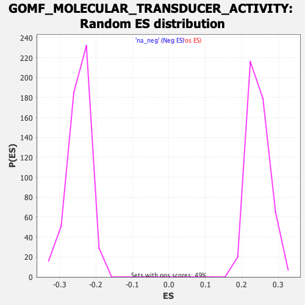

| Dataset | qlf.KOd4vsWTd4_gsea_score |
| Phenotype | NoPhenotypeAvailable |
| Upregulated in class | na_neg |
| GeneSet | GOMF_MOLECULAR_TRANSDUCER_ACTIVITY |
| Enrichment Score (ES) | -0.43889362 |
| Normalized Enrichment Score (NES) | -1.7761203 |
| Nominal p-value | 0.0 |
| FDR q-value | 0.049576838 |
| FWER p-Value | 0.978 |

| SYMBOL | RANK IN GENE LIST | RANK METRIC SCORE | RUNNING ES | CORE ENRICHMENT | |
|---|---|---|---|---|---|
| 1 | CD86 | 0 | 8.166 | 0.0151 | No |
| 2 | RXRA | 4 | 7.803 | 0.0292 | No |
| 3 | S1PR3 | 12 | 6.602 | 0.0408 | No |
| 4 | CD74 | 33 | 5.807 | 0.0495 | No |
| 5 | PTPRK | 52 | 5.405 | 0.0578 | No |
| 6 | PTGER4 | 56 | 5.362 | 0.0674 | No |
| 7 | STRA6 | 94 | 4.668 | 0.0724 | No |
| 8 | CD300LF | 96 | 4.645 | 0.0809 | No |
| 9 | IL2RA | 102 | 4.590 | 0.0889 | No |
| 10 | AHR | 152 | 4.259 | 0.0920 | No |
| 11 | TNFRSF18 | 165 | 4.163 | 0.0985 | No |
| 12 | SIGMAR1 | 167 | 4.138 | 0.1060 | No |
| 13 | TNFRSF4 | 180 | 4.044 | 0.1123 | No |
| 14 | CCR6 | 209 | 3.904 | 0.1168 | No |
| 15 | NRP1 | 215 | 3.875 | 0.1235 | No |
| 16 | EBI3 | 219 | 3.820 | 0.1302 | No |
| 17 | NOTCH2 | 235 | 3.735 | 0.1357 | No |
| 18 | FKBP3 | 273 | 3.513 | 0.1386 | No |
| 19 | NR4A3 | 354 | 3.225 | 0.1367 | No |
| 20 | CXCR3 | 379 | 3.153 | 0.1402 | No |
| 21 | GPR25 | 446 | 2.948 | 0.1391 | No |
| 22 | TNFRSF1B | 456 | 2.930 | 0.1437 | No |
| 23 | IL10RA | 464 | 2.922 | 0.1484 | No |
| 24 | BCAM | 486 | 2.863 | 0.1516 | No |
| 25 | CCR8 | 511 | 2.816 | 0.1545 | No |
| 26 | CD72 | 520 | 2.805 | 0.1589 | No |
| 27 | SLC52A2 | 544 | 2.768 | 0.1618 | No |
| 28 | IL7R | 582 | 2.663 | 0.1631 | No |
| 29 | RARA | 589 | 2.641 | 0.1673 | No |
| 30 | IL17RB | 629 | 2.544 | 0.1682 | No |
| 31 | TNFRSF9 | 697 | 2.430 | 0.1662 | No |
| 32 | ITGB1 | 726 | 2.358 | 0.1678 | No |
| 33 | CHRM4 | 963 | 2.041 | 0.1484 | No |
| 34 | GPR55 | 974 | 2.022 | 0.1512 | No |
| 35 | TNFRSF8 | 1053 | 1.899 | 0.1471 | No |
| 36 | ESR1 | 1169 | 1.761 | 0.1390 | No |
| 37 | CALCRL | 1190 | 1.739 | 0.1403 | No |
| 38 | LANCL1 | 1210 | 1.719 | 0.1416 | No |
| 39 | FCRL1 | 1254 | 1.673 | 0.1405 | No |
| 40 | PTPN6 | 1261 | 1.665 | 0.1430 | No |
| 41 | LPAR2 | 1462 | 1.488 | 0.1262 | No |
| 42 | IL15RA | 1480 | 1.470 | 0.1272 | No |
| 43 | PVR | 1534 | 1.425 | 0.1246 | No |
| 44 | CTSH | 1542 | 1.420 | 0.1266 | No |
| 45 | PGRMC2 | 1618 | 1.361 | 0.1218 | No |
| 46 | RRBP1 | 1673 | 1.318 | 0.1189 | No |
| 47 | TM2D1 | 1718 | 1.288 | 0.1170 | No |
| 48 | CRY2 | 1724 | 1.283 | 0.1189 | No |
| 49 | ABCA1 | 1889 | 1.160 | 0.1049 | No |
| 50 | CCRL2 | 1908 | 1.145 | 0.1053 | No |
| 51 | SLC20A2 | 2001 | 1.078 | 0.0983 | No |
| 52 | IL9R | 2156 | 0.981 | 0.0850 | No |
| 53 | P2RY1 | 2239 | 0.930 | 0.0787 | No |
| 54 | ADORA2A | 2270 | 0.912 | 0.0774 | No |
| 55 | IGF2R | 2313 | 0.889 | 0.0750 | No |
| 56 | IL12RB1 | 2329 | 0.882 | 0.0751 | No |
| 57 | NR4A2 | 2346 | 0.874 | 0.0752 | No |
| 58 | AGER | 2378 | 0.862 | 0.0737 | No |
| 59 | PRNP | 2448 | 0.833 | 0.0685 | No |
| 60 | CD44 | 2610 | 0.754 | 0.0541 | No |
| 61 | SCARB1 | 2642 | 0.741 | 0.0525 | No |
| 62 | NR2C1 | 2679 | 0.726 | 0.0503 | No |
| 63 | JMJD6 | 2723 | 0.707 | 0.0474 | No |
| 64 | PTCH1 | 2754 | 0.690 | 0.0457 | No |
| 65 | BMPR2 | 2866 | 0.643 | 0.0360 | No |
| 66 | IL2RB | 2894 | 0.629 | 0.0345 | No |
| 67 | LPAR5 | 2907 | 0.625 | 0.0345 | No |
| 68 | F2RL3 | 2912 | 0.623 | 0.0353 | No |
| 69 | CUL5 | 3113 | 0.558 | 0.0167 | No |
| 70 | IL10RB | 3215 | 0.520 | 0.0078 | No |
| 71 | EIF2D | 3294 | 0.493 | 0.0010 | No |
| 72 | THRB | 3395 | 0.463 | -0.0079 | No |
| 73 | CD79B | 3437 | 0.451 | -0.0111 | No |
| 74 | VAC14 | 3499 | 0.431 | -0.0163 | No |
| 75 | LRP6 | 3511 | 0.426 | -0.0166 | No |
| 76 | VIPR2 | 3544 | 0.415 | -0.0189 | No |
| 77 | RXRB | 3551 | 0.414 | -0.0187 | No |
| 78 | PLXNA3 | 3621 | 0.390 | -0.0248 | No |
| 79 | ADGRE5 | 3682 | 0.373 | -0.0300 | No |
| 80 | SREBF1 | 3693 | 0.371 | -0.0303 | No |
| 81 | GPR65 | 3717 | 0.365 | -0.0318 | No |
| 82 | CCR7 | 3768 | 0.353 | -0.0361 | No |
| 83 | P2RX4 | 3788 | 0.346 | -0.0373 | No |
| 84 | LMBR1 | 3808 | 0.341 | -0.0385 | No |
| 85 | F2R | 3823 | 0.337 | -0.0393 | No |
| 86 | ICAM1 | 3876 | 0.323 | -0.0438 | No |
| 87 | PTGIR | 4041 | 0.278 | -0.0593 | No |
| 88 | TNFRSF10B | 4072 | 0.270 | -0.0618 | No |
| 89 | CD160 | 4218 | 0.236 | -0.0755 | No |
| 90 | CD5 | 4221 | 0.235 | -0.0753 | No |
| 91 | TMEM63B | 4459 | 0.178 | -0.0982 | No |
| 92 | NR4A1 | 4486 | 0.172 | -0.1004 | No |
| 93 | PKD1L3 | 4571 | 0.149 | -0.1084 | No |
| 94 | SEC62 | 4615 | 0.142 | -0.1123 | No |
| 95 | CRIM1 | 4730 | 0.117 | -0.1233 | No |
| 96 | AVPR2 | 4766 | 0.112 | -0.1265 | No |
| 97 | TLR2 | 4818 | 0.103 | -0.1313 | No |
| 98 | CSF2RA | 4826 | 0.102 | -0.1318 | No |
| 99 | CXCR6 | 4899 | 0.088 | -0.1387 | No |
| 100 | PLXNC1 | 4921 | 0.086 | -0.1406 | No |
| 101 | CRCP | 4938 | 0.082 | -0.1420 | No |
| 102 | PPARD | 4947 | 0.080 | -0.1427 | No |
| 103 | OGFR | 4948 | 0.079 | -0.1425 | No |
| 104 | IZUMO1R | 5199 | 0.035 | -0.1669 | No |
| 105 | CD69 | 5212 | 0.033 | -0.1681 | No |
| 106 | MMD | 5222 | 0.032 | -0.1689 | No |
| 107 | IL20RB | 5241 | 0.029 | -0.1706 | No |
| 108 | ITGAV | 5396 | 0.000 | -0.1857 | No |
| 109 | PLXNB1 | 5415 | -0.003 | -0.1874 | No |
| 110 | TNFRSF19 | 5423 | -0.004 | -0.1881 | No |
| 111 | AR | 5447 | -0.007 | -0.1903 | No |
| 112 | TEX264 | 5512 | -0.017 | -0.1966 | No |
| 113 | OPN3 | 5584 | -0.029 | -0.2035 | No |
| 114 | TGFBR3L | 5661 | -0.040 | -0.2109 | No |
| 115 | ADIPOR2 | 5674 | -0.042 | -0.2120 | No |
| 116 | TYRO3 | 5770 | -0.060 | -0.2212 | No |
| 117 | GPR15 | 5775 | -0.061 | -0.2214 | No |
| 118 | EVI2A | 5822 | -0.067 | -0.2258 | No |
| 119 | ITGB3 | 5874 | -0.075 | -0.2307 | No |
| 120 | PKD1 | 5882 | -0.077 | -0.2312 | No |
| 121 | M6PR | 5903 | -0.081 | -0.2330 | No |
| 122 | NR2F6 | 5925 | -0.084 | -0.2349 | No |
| 123 | IFNGR2 | 5984 | -0.094 | -0.2404 | No |
| 124 | SLC20A1 | 5993 | -0.096 | -0.2410 | No |
| 125 | PLXNA1 | 6046 | -0.105 | -0.2459 | No |
| 126 | THRA | 6093 | -0.114 | -0.2502 | No |
| 127 | ADGRD1 | 6159 | -0.125 | -0.2564 | No |
| 128 | CD79A | 6180 | -0.130 | -0.2581 | No |
| 129 | GPR83 | 6195 | -0.133 | -0.2592 | No |
| 130 | ESRRA | 6196 | -0.133 | -0.2590 | No |
| 131 | B9D1 | 6197 | -0.134 | -0.2587 | No |
| 132 | MILR1 | 6212 | -0.137 | -0.2598 | No |
| 133 | PTGER1 | 6234 | -0.142 | -0.2616 | No |
| 134 | NR3C1 | 6295 | -0.154 | -0.2672 | No |
| 135 | RNF139 | 6385 | -0.173 | -0.2756 | No |
| 136 | PAQR8 | 6450 | -0.188 | -0.2816 | No |
| 137 | GPR174 | 6458 | -0.190 | -0.2819 | No |
| 138 | NRP2 | 6501 | -0.199 | -0.2856 | No |
| 139 | CLEC2D | 6516 | -0.204 | -0.2866 | No |
| 140 | CHRNA2 | 6557 | -0.212 | -0.2902 | No |
| 141 | ADIPOR1 | 6610 | -0.226 | -0.2948 | No |
| 142 | PTPRF | 6645 | -0.235 | -0.2977 | No |
| 143 | CD48 | 6677 | -0.244 | -0.3003 | No |
| 144 | DDR1 | 6745 | -0.260 | -0.3064 | No |
| 145 | CD3E | 6803 | -0.275 | -0.3115 | No |
| 146 | IL2RG | 6831 | -0.282 | -0.3136 | No |
| 147 | XPR1 | 6956 | -0.316 | -0.3252 | No |
| 148 | S1PR2 | 6990 | -0.328 | -0.3278 | No |
| 149 | ARNT | 7032 | -0.337 | -0.3312 | No |
| 150 | PAQR4 | 7077 | -0.349 | -0.3349 | No |
| 151 | ABHD2 | 7124 | -0.365 | -0.3387 | No |
| 152 | SEC63 | 7143 | -0.369 | -0.3398 | No |
| 153 | TMEM123 | 7177 | -0.379 | -0.3423 | No |
| 154 | NPC1 | 7257 | -0.401 | -0.3493 | No |
| 155 | CHRNB1 | 7269 | -0.405 | -0.3496 | No |
| 156 | GPR19 | 7336 | -0.430 | -0.3553 | No |
| 157 | AXL | 7343 | -0.434 | -0.3551 | No |
| 158 | INTS6 | 7434 | -0.463 | -0.3630 | No |
| 159 | SPHK2 | 7477 | -0.482 | -0.3663 | No |
| 160 | IL1RAP | 7542 | -0.509 | -0.3716 | No |
| 161 | CELSR1 | 7568 | -0.516 | -0.3731 | No |
| 162 | PLXND1 | 7606 | -0.530 | -0.3757 | No |
| 163 | PTGER2 | 7642 | -0.548 | -0.3782 | No |
| 164 | ITGAL | 7652 | -0.552 | -0.3780 | No |
| 165 | CHRM3 | 7667 | -0.556 | -0.3784 | No |
| 166 | RECK | 7683 | -0.564 | -0.3788 | No |
| 167 | ATRN | 7712 | -0.574 | -0.3805 | No |
| 168 | CX3CR1 | 7713 | -0.575 | -0.3794 | No |
| 169 | CXCR4 | 7717 | -0.577 | -0.3786 | No |
| 170 | TNFRSF13B | 7762 | -0.596 | -0.3818 | No |
| 171 | PGLYRP1 | 7775 | -0.603 | -0.3819 | No |
| 172 | GPR171 | 7782 | -0.606 | -0.3814 | No |
| 173 | LRP8 | 7794 | -0.609 | -0.3813 | No |
| 174 | CNR2 | 7835 | -0.625 | -0.3841 | No |
| 175 | ADGRL1 | 7836 | -0.626 | -0.3829 | No |
| 176 | GPR34 | 7953 | -0.675 | -0.3930 | No |
| 177 | GRIK5 | 8043 | -0.712 | -0.4004 | No |
| 178 | PGLYRP2 | 8047 | -0.713 | -0.3994 | No |
| 179 | SLAMF1 | 8097 | -0.736 | -0.4029 | No |
| 180 | AMFR | 8111 | -0.741 | -0.4028 | No |
| 181 | NR1H2 | 8124 | -0.748 | -0.4026 | No |
| 182 | MRGPRE | 8130 | -0.752 | -0.4017 | No |
| 183 | TLR6 | 8158 | -0.767 | -0.4029 | No |
| 184 | GPR18 | 8187 | -0.781 | -0.4042 | No |
| 185 | ACVR2A | 8248 | -0.816 | -0.4086 | No |
| 186 | CCR4 | 8296 | -0.837 | -0.4116 | No |
| 187 | SLC1A5 | 8309 | -0.845 | -0.4112 | No |
| 188 | LMTK2 | 8323 | -0.853 | -0.4109 | No |
| 189 | VDR | 8325 | -0.855 | -0.4094 | No |
| 190 | CD4 | 8336 | -0.860 | -0.4088 | No |
| 191 | MR1 | 8346 | -0.865 | -0.4081 | No |
| 192 | CSF1R | 8363 | -0.879 | -0.4080 | No |
| 193 | IL6ST | 8366 | -0.881 | -0.4066 | No |
| 194 | INSR | 8390 | -0.906 | -0.4072 | No |
| 195 | CD3G | 8425 | -0.929 | -0.4088 | No |
| 196 | CD200R1 | 8433 | -0.934 | -0.4078 | No |
| 197 | P2RY12 | 8480 | -0.956 | -0.4105 | No |
| 198 | ERBB3 | 8528 | -0.986 | -0.4133 | No |
| 199 | TRAM1 | 8593 | -1.023 | -0.4177 | No |
| 200 | TGFBR1 | 8655 | -1.062 | -0.4217 | No |
| 201 | NR2C2 | 8672 | -1.073 | -0.4213 | No |
| 202 | LY75 | 8730 | -1.106 | -0.4248 | No |
| 203 | ADGRG5 | 8749 | -1.117 | -0.4245 | No |
| 204 | CCR2 | 8756 | -1.121 | -0.4230 | No |
| 205 | SMO | 8767 | -1.126 | -0.4219 | No |
| 206 | LAG3 | 8775 | -1.129 | -0.4205 | No |
| 207 | RAMP1 | 8780 | -1.131 | -0.4188 | No |
| 208 | IL21R | 8800 | -1.147 | -0.4185 | No |
| 209 | IL3RA | 8822 | -1.167 | -0.4184 | No |
| 210 | PTPRE | 8880 | -1.220 | -0.4218 | No |
| 211 | LY96 | 8954 | -1.277 | -0.4266 | No |
| 212 | TAPT1 | 9076 | -1.386 | -0.4359 | No |
| 213 | SEMA4D | 9108 | -1.418 | -0.4363 | Yes |
| 214 | SLC22A17 | 9111 | -1.422 | -0.4338 | Yes |
| 215 | CELSR2 | 9117 | -1.426 | -0.4317 | Yes |
| 216 | ITGA4 | 9147 | -1.454 | -0.4318 | Yes |
| 217 | AGTRAP | 9181 | -1.500 | -0.4323 | Yes |
| 218 | NR1D2 | 9236 | -1.560 | -0.4347 | Yes |
| 219 | RORA | 9249 | -1.570 | -0.4330 | Yes |
| 220 | ITGB2 | 9274 | -1.590 | -0.4324 | Yes |
| 221 | GPRC5B | 9285 | -1.604 | -0.4304 | Yes |
| 222 | HRH2 | 9325 | -1.645 | -0.4312 | Yes |
| 223 | ANTXR2 | 9363 | -1.687 | -0.4317 | Yes |
| 224 | RARG | 9396 | -1.726 | -0.4316 | Yes |
| 225 | ACVR1B | 9432 | -1.776 | -0.4318 | Yes |
| 226 | NTRK3 | 9477 | -1.840 | -0.4327 | Yes |
| 227 | IL18R1 | 9488 | -1.855 | -0.4302 | Yes |
| 228 | TBXA2R | 9491 | -1.869 | -0.4270 | Yes |
| 229 | RAMP3 | 9503 | -1.879 | -0.4246 | Yes |
| 230 | CD3D | 9548 | -1.961 | -0.4253 | Yes |
| 231 | CD247 | 9582 | -2.010 | -0.4248 | Yes |
| 232 | STAT3 | 9593 | -2.028 | -0.4220 | Yes |
| 233 | UNC5CL | 9596 | -2.029 | -0.4185 | Yes |
| 234 | TNFRSF1A | 9604 | -2.049 | -0.4154 | Yes |
| 235 | IFNAR1 | 9640 | -2.102 | -0.4149 | Yes |
| 236 | CRY1 | 9644 | -2.107 | -0.4113 | Yes |
| 237 | IGF1R | 9651 | -2.125 | -0.4080 | Yes |
| 238 | ADRB2 | 9657 | -2.133 | -0.4045 | Yes |
| 239 | L1CAM | 9670 | -2.163 | -0.4017 | Yes |
| 240 | CD7 | 9675 | -2.172 | -0.3981 | Yes |
| 241 | GPR183 | 9688 | -2.193 | -0.3952 | Yes |
| 242 | IL18RAP | 9696 | -2.208 | -0.3918 | Yes |
| 243 | PTK2B | 9731 | -2.282 | -0.3909 | Yes |
| 244 | CD47 | 9735 | -2.292 | -0.3869 | Yes |
| 245 | IL27RA | 9745 | -2.318 | -0.3835 | Yes |
| 246 | TGFBR3 | 9750 | -2.332 | -0.3796 | Yes |
| 247 | SORCS2 | 9752 | -2.334 | -0.3754 | Yes |
| 248 | DERL1 | 9830 | -2.482 | -0.3784 | Yes |
| 249 | F2RL1 | 9866 | -2.554 | -0.3771 | Yes |
| 250 | TREML2 | 9912 | -2.655 | -0.3766 | Yes |
| 251 | NOTCH1 | 9915 | -2.659 | -0.3718 | Yes |
| 252 | IFNGR1 | 9928 | -2.711 | -0.3680 | Yes |
| 253 | GPR68 | 9929 | -2.715 | -0.3630 | Yes |
| 254 | NOD1 | 9955 | -2.788 | -0.3603 | Yes |
| 255 | SORL1 | 9979 | -2.867 | -0.3572 | Yes |
| 256 | TNFRSF14 | 9995 | -2.897 | -0.3533 | Yes |
| 257 | RTN4RL1 | 10016 | -2.946 | -0.3499 | Yes |
| 258 | IL1RL2 | 10082 | -3.190 | -0.3503 | Yes |
| 259 | PTPRC | 10093 | -3.226 | -0.3453 | Yes |
| 260 | ATP6AP2 | 10099 | -3.252 | -0.3398 | Yes |
| 261 | CD2 | 10111 | -3.303 | -0.3348 | Yes |
| 262 | P2RY10 | 10115 | -3.327 | -0.3289 | Yes |
| 263 | BTLA | 10123 | -3.364 | -0.3234 | Yes |
| 264 | TPRA1 | 10158 | -3.468 | -0.3203 | Yes |
| 265 | FAS | 10185 | -3.610 | -0.3162 | Yes |
| 266 | KIT | 10186 | -3.625 | -0.3095 | Yes |
| 267 | VIPR1 | 10189 | -3.628 | -0.3030 | Yes |
| 268 | ACVRL1 | 10199 | -3.677 | -0.2971 | Yes |
| 269 | SPN | 10202 | -3.684 | -0.2904 | Yes |
| 270 | CRLF2 | 10215 | -3.759 | -0.2847 | Yes |
| 271 | IL1R2 | 10222 | -3.781 | -0.2783 | Yes |
| 272 | TGFBR2 | 10227 | -3.823 | -0.2716 | Yes |
| 273 | INPP5K | 10231 | -3.859 | -0.2647 | Yes |
| 274 | LMBR1L | 10250 | -4.018 | -0.2591 | Yes |
| 275 | EPHB6 | 10258 | -4.066 | -0.2522 | Yes |
| 276 | GPR132 | 10286 | -4.222 | -0.2471 | Yes |
| 277 | PAQR7 | 10294 | -4.258 | -0.2399 | Yes |
| 278 | TLR1 | 10301 | -4.300 | -0.2325 | Yes |
| 279 | PECAM1 | 10302 | -4.327 | -0.2245 | Yes |
| 280 | CD28 | 10320 | -4.441 | -0.2180 | Yes |
| 281 | SCARB2 | 10324 | -4.466 | -0.2100 | Yes |
| 282 | GABBR1 | 10326 | -4.469 | -0.2019 | Yes |
| 283 | ABCA7 | 10335 | -4.537 | -0.1943 | Yes |
| 284 | GABRR2 | 10350 | -4.647 | -0.1870 | Yes |
| 285 | LPAR6 | 10370 | -4.832 | -0.1800 | Yes |
| 286 | S1PR4 | 10372 | -4.869 | -0.1711 | Yes |
| 287 | IL17RE | 10388 | -5.019 | -0.1632 | Yes |
| 288 | PTPRA | 10392 | -5.042 | -0.1542 | Yes |
| 289 | GPR146 | 10402 | -5.209 | -0.1455 | Yes |
| 290 | P2RX7 | 10411 | -5.252 | -0.1365 | Yes |
| 291 | ITGB7 | 10425 | -5.436 | -0.1278 | Yes |
| 292 | TSPO | 10433 | -5.552 | -0.1182 | Yes |
| 293 | TMEM63A | 10445 | -5.761 | -0.1086 | Yes |
| 294 | IFNAR2 | 10449 | -5.816 | -0.0981 | Yes |
| 295 | CD27 | 10456 | -6.055 | -0.0875 | Yes |
| 296 | IL17RA | 10468 | -6.362 | -0.0769 | Yes |
| 297 | IL1R1 | 10472 | -6.454 | -0.0652 | Yes |
| 298 | RORC | 10475 | -6.577 | -0.0532 | Yes |
| 299 | CXCR5 | 10476 | -6.612 | -0.0410 | Yes |
| 300 | S1PR1 | 10497 | -7.694 | -0.0288 | Yes |
| 301 | TNFRSF25 | 10500 | -7.974 | -0.0142 | Yes |
| 302 | PEAR1 | 10501 | -8.054 | 0.0007 | Yes |
